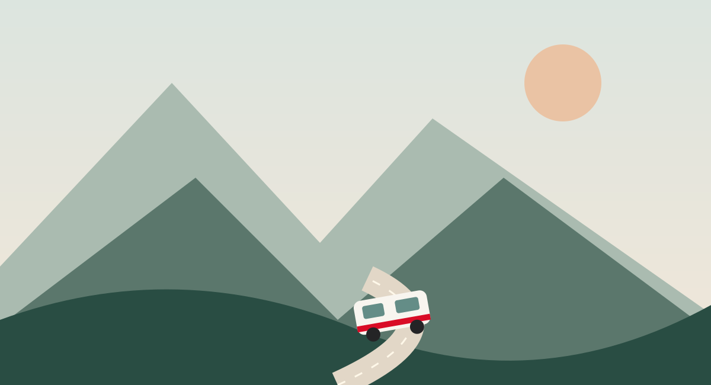

Entra en AU Ido
Utiliza tu cuenta autorizada para consultar tus viajes.
MÁS KILÓMETROS JUNTOS
¿Cuál es el próximo viaje?
Elige una imagen y entra: ruta, gastos, vacaciones y recuerdos, en una misma ficha.
Solo tú editas tus viajes. Las personas elegidas pueden consultarlos. Los gastos mantienen los permisos compartidos del grupo.
Copias e importaciones
Los viajes recuperados se crean como privados. Las cuentas antiguas siguen disponibles para vincularlas al viaje correspondiente.

Mapa y recorrido
Si Google bloquea la vista, abre el enlace o revisa los permisos del mapa. La inserción pública de My Maps requiere publicar el mapa en Google; el acceso de AU Ido no lo hace privado.
Mapa con conexión a internet. Las rutas y puntos guardados siguen los permisos de este viaje.